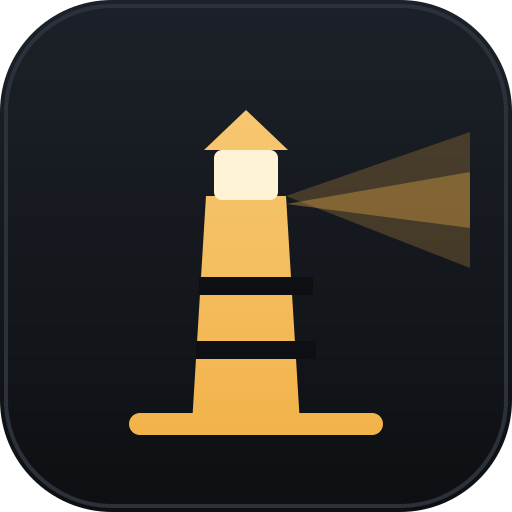

Il tuo Wi-Fi, ovunque. App che volano offline.
AirplaneMode trasforma un piccolo router in un hotspot privato. Accede al Wi-Fi dell'hotel una volta sola per tutti i dispositivi, si riconnette da solo e fa girare giochi, strumenti e un piccolo modello linguistico senza alcuna connessione a internet.
Siamo agli inizi. Tutto è testato su un vero OpenWrt in Docker; il primo hardware è in arrivo.


Pensato per hotel, aeroporti e aerei
Tutto gira sul router. I tuoi dispositivi si collegano a una rete che è solo tua, e al resto ci pensa lui.
Un solo accesso per tutti
Una persona accetta la pagina delle condizioni dell'hotel e tutti i telefoni, portatili e tablet sono online. Niente da pagare per ogni dispositivo.
Si riconnette da solo
Ricorda le reti e ci si ricollega. Collega il cavo Ethernet della camera e verrà usato per primo.
App senza internet
Giochi di carte con gli amici sull'hotspot, quiz di viaggio, avventure testuali, film, condivisione di file, Wikivoyage offline e un modello linguistico integrato nel router.
La tua VPN di casa
Incolla una configurazione WireGuard e tutto il traffico ci passa attraverso. L'hotel vede solo traffico cifrato.
Dispositivi e consumo di dati
Guarda chi è connesso e quanti dati ha consumato ogni rete. Metti in pausa il tablet che fa streaming tutta la notte.
Privilegi minimi
Il pannello di amministrazione controlla il router con un accesso limitato alle impostazioni Wi-Fi. Mai come root.
Dalla scatola all'hotspot in circa mezz'ora
Scegli il tuo router. Spunta i passaggi man mano: questa pagina ricorda a che punto sei.
-
Procurati i componenti
NanoPi R6S, 8 GB Il dispositivo vero e proprio. Prendi il case in metallo: fa da dissipatore. 2 × adattatore Wi-Fi USB L'R6S non ha il Wi-Fi. Solo MediaTek: ad es. ALFA AWUS036ACM (MT7612U) per l'hotspot, AWUS036ACHM (MT7610U) per la rete dell'hotel. Alimentatore USB-C da 5 V / 3 A Oppure un power bank USB-C PD. Scheda microSD da 8 GB o più Serve solo per il flash, una volta. Prolunga USB corta Facoltativa. Tiene uno degli adattatori lontano dal case. -
Installa FriendlyWrt sulla eMMC
FriendlyWrt è l'OpenWrt di FriendlyElec, con Docker già incluso.
- Apri la pagina di download di FriendlyElec →
01_Official images→02_SD-to-eMMC imagese scarica il file con un nome tipork3588-eflasher-friendlywrt-…-docker-….img.gz. Scegli quello condockernel nome. - Scrivilo sulla scheda microSD con balenaEtcher (accetta direttamente il
.gz). Su Windows, lo strumento indicato da FriendlyElec è Win32 Disk Imager: prima decomprimi l'immagine. - Inserisci la scheda nell'R6S e accendilo. Si installa da solo sulla eMMC. Osserva la spia rossa SYS:
lampeggio veloceinstallazione in corso, qualche minuto lento + verdefatto: SYS lampeggia lentamente e le spie WAN/LAN restano accese- Stacca l'alimentazione, togli la scheda e riaccendi. Ora si avvia dalla eMMC.
- Apri la pagina di download di FriendlyElec →
-
Accedi una volta e mettilo online
- Collega il portatile alla porta con la scritta LAN e un cavo dal router di casa alla porta con la scritta WAN.
- Apri http://192.168.2.1. Accedi come
rootcon la passwordpassword(in alcune versioni va lasciata vuota). - Imposta una tua password di root: System → Administration. Resta solo tua; AirplaneMode riceve un suo accesso, con permessi limitati.
-
Collega gli adattatori Wi-Fi
Metti l'adattatore dell'hotspot (AWUS036ACM) nella porta blu USB 3.0 e l'altro nella porta USB 2.0. In LuCI, Network → Wireless ora dovrebbe mostrare due radio. Non serve configurarle: ci pensa il pannello di amministrazione.
-
Avvia l'installer
Apri un terminale (PowerShell su Windows, Terminale su Mac), collegati con
ssh root@192.168.2.1e incolla questo. Controlla il router, installa tutto (circa 3,8 GB) e alla fine mostra la tua password di amministratore. -
Dai un nome al tuo hotspot
Apri http://airplane.mode:8080/admin/, accedi con la password mostrata dall'installer e dai al tuo hotspot un nome e una password. Da lì in poi i tuoi dispositivi se lo ricordano, ovunque tu vada.
-
Controlla il modello
Ti serve un GL.iNet arm64 (per esempio Flint 2 / GL-MT6000) con 1 GB di RAM, più una chiavetta USB o una scheda SD da 8 GB o più per Docker. I modelli MIPS più vecchi non funzionano.
-
Mettilo online e apri una shell
Collega il router a internet dal suo pannello di amministrazione (http://192.168.8.1). Poi, da un terminale:
ssh root@192.168.8.1, con la password del pannello di amministrazione. -
Installa Docker
Monta la memoria USB o SD (pannello di amministrazione GL.iNet → Applications → Network Storage), poi:
# opkg update && opkg install dockerd docker docker-composeFai salvare a Docker i suoi dati sulla memoria USB/SD (
data_rootin/etc/config/dockerd) e avvialo con/etc/init.d/dockerd restart. I nomi dei pacchetti possono cambiare da una versione del firmware all'altra. -
Avvia l'installer
Incolla questo nella stessa shell. Controlla il router, installa tutto e alla fine mostra la tua password di amministratore.
-
Dai un nome al tuo hotspot e scegli un solo ripetitore
Apri http://airplane.mode:8080/admin/ e accedi. GL.iNet ha una sua pagina del ripetitore che modifica anche il Wi-Fi a monte, quindi usa quella oppure il pannello Internet source di AirplaneMode, non entrambi.
Cose da fare a 10.000 metri
Dieci app finora. Ognuna è un progetto open source a sé e si aggiunge come container.

The Dark Light
Avventure testuali narrate dal modello integrato, da soli o in gruppo dai telefoni di tutti: un faro al buio, un passo di montagna ghiacciato e una palude avvolta nella nebbia.
Giochi · usa il modello (non su GL.iNet)Gate Change
Un gioco di carte veloce, a colori e numeri, da 2 a 8 giocatori. Sfida gli amici sull'hotspot, ognuno dal suo telefono, o i bot.
GiochiPassport
Un gioco di carte deck-building a tema viaggi. Colleziona timbri e visti contro gli amici sull'hotspot, o contro i bot.
GiochiWayfarer
Quiz di viaggio dalla Travel Guide: capitali, valute, codici aeroportuali, frasi utili. Volo del giorno, modalità infinita, record.
GiochiDoom
Il classico sparatutto, sul tuo dispositivo con i comandi touch. Freedoom, l'episodio aeroportuale Layover o i tuoi file WAD da Drop.
GiochiCinema
Guarda film e serie, e ascolta la musica, caricati su Drop. Ogni dispositivo riprende da dove si era fermato.
IntrattenimentoQuickShot
Un feed infinito con i video brevi della cartella QuickShot di Drop. Scorri, metti like, commenta.
IntrattenimentoThe Couch
Un simulatore di terapeuta: parla di quello che ti passa per la testa con uno dei sei terapeuti, dall'Empatico gentile al Narcisista burlone, interpretati dal modello integrato. Non è una vera terapia.
Intrattenimento · usa il modello (non su GL.iNet)Travel Guide
Tutta Wikivoyage, offline. Cerca qualsiasi destinazione, oppure fai una domanda e ricevi una risposta dalla guida.
Viaggi · usa il modello (non su GL.iNet)Drop
Invia file e note tra tutti i telefoni, tablet e portatili sull'hotspot, e tieni da parte qualche film per il volo.
Strumenti